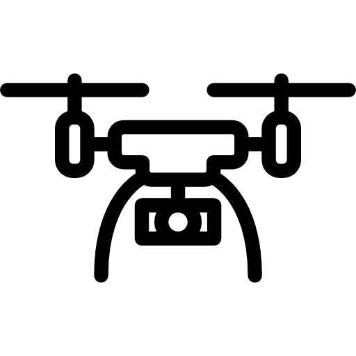
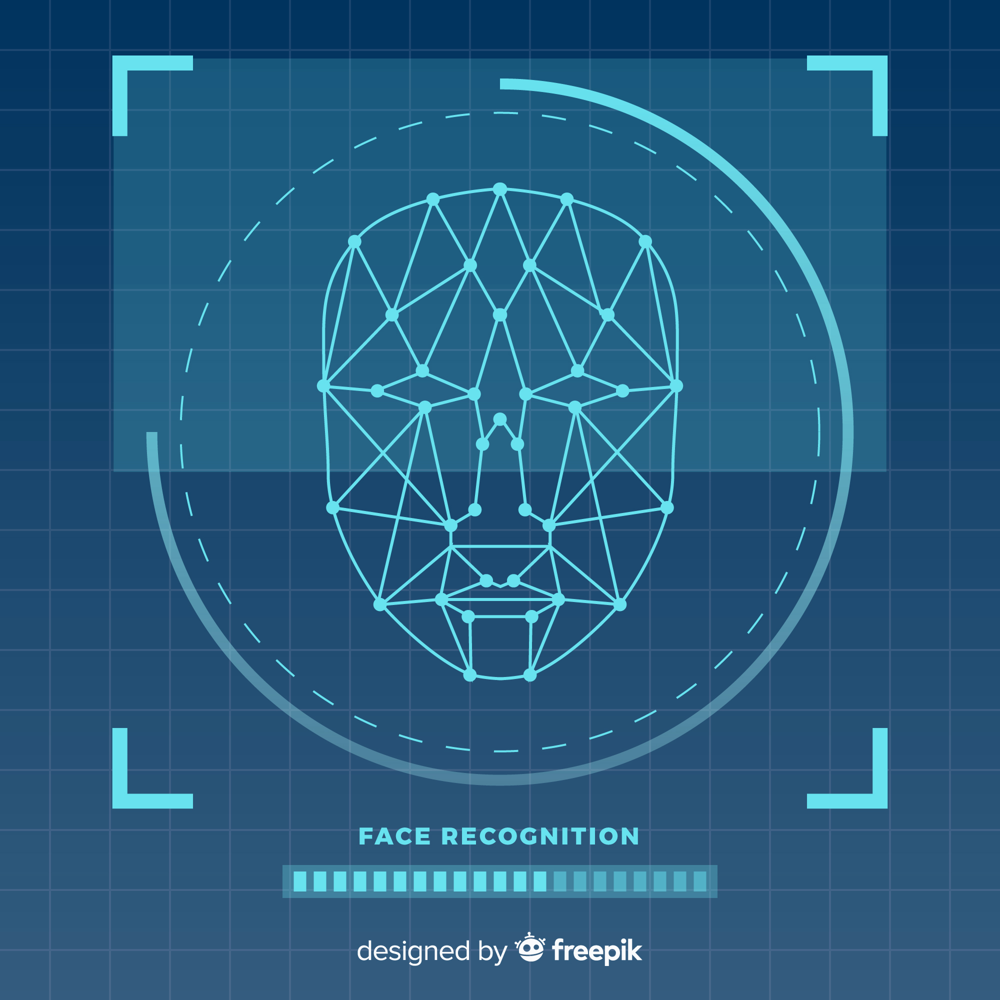

PDF Reader
I created a program that is able to locate and read various text on
multiple pdfs of different formats. I used python and opencv for image
processing, and trained a Convolutional Neural Network for locating
text and identifying characters. This project was done for my 2024
Summer Internship as a Machine Learning Engineer.

Drone Rescue
This program controls a virtual drone that has to locate a remote
island and idenitfy safe entry points for rescue missions. This
project was an assignment for my Software Development course.
Maze Runner
A program that can solve any maze by using Right-Hand Algorithm. A
updated version of this project was created that improved on overall
code quality and solves the maze using Dijkstras Algroithm. These
projects were an assignment for my Software Development course.
Github link to the first version:
Here!
Github link to the updated version:
Here!

Facial-Recognition Program
A program that recognizes people you know from the pictures you have
of them. There is also an option to add unrecognized people to known
people as a new person.
Hand-Gesture Recognizer
A program that translates certain hand gestures into letters of the
alphabet. This project was done for DeltaHacks Hackathon 2024!